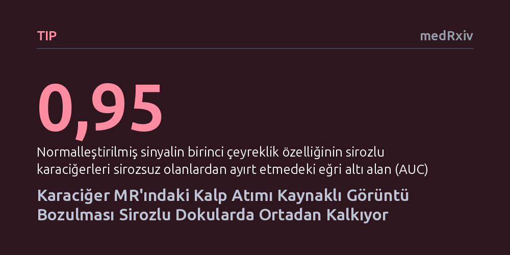

TIP · medRxiv · 2026-10-26
Araştırmacılar, karaciğer MR taramalarında kalbin atımından kaynaklanan ve normalde görüntü bozukluğu sayılan sinyal kayıplarının siroz tespitinde bir biyobelirteç olarak kullanılıp kullanılamayacağını inceledi. Sağlıklı karaciğerlerde belirgin olan bu nabız izlerinin dokunun sertleştiği sirozlu hastalarda neredeyse tamamen kaybolduğu ve iki grubu yüksek doğrulukla ayırt ettiği saptandı.
Rutin MR çekimlerinde istenmeyen bir görüntü hatası sayılan nabız kaynaklı sinyal kaybı, ek bir maliyet veya biyopsiye gerek bırakmadan karaciğerdeki siroz sertliğini doğrudan gösteren doğal bir avantaja dönüşebilir.

Karaciğer sirozu, kronik karaciğer hastalıklarının ilerlemesiyle sağlıklı dokunun yerini sert ve işlevsiz nedbe dokusunun alması durumudur. Hastalığın evresini belirlemek ve erken müdahale edebilmek için dokunun ne kadar sertleştiğini ölçmek hayati önem taşır. Günümüzde doku sertliği çoğunlukla iğne biyopsisi gibi girişimsel yöntemlerle veya özel ek donanımlar gerektiren manyetik rezonans elastografi gibi pahalı tekniklerle incelenmektedir. Biyopsinin kanama riski taşıması ve elastografi cihazlarının her merkezde bulunmaması, hekimleri rutin taramalarda elde edilen standart görüntülerden doku sertliği hakkında ipucu yakalamaya yöneltmektedir.
Karaciğerin difüzyon ağırlıklı manyetik rezonans (MR) taramalarında radyologların uzun süredir karşılaştığı can sıkıcı bir sorun vardır: Kalbin her atımında göğüs kafesinden karaciğere iletilen mekanik dalgalar, özellikle kalbe yakın olan sol karaciğer lobunda belirgin bir sinyal kaybına yol açar. Tıp literatüründe nabız yapay izi olarak bilinen bu durum, görüntüyü bozduğu için bugüne kadar hep kurtulunması gereken teknik bir kusur olarak görülmüştür. Araştırmacılar ise bu bakışı tersine çevirerek yazarların ifadesiyle "bu hatayı bir özelliğe dönüştürmeyi" hedeflemiş ve mekanik titreşimlerin dokunun sertliğine göre değişeceği hipotezinden yola çıkarak bu izin siroz tanısında kullanılıp kullanılamayacağını araştırmıştır.
Araştırma ekibi, hipotezlerini sınamak için hem geriye dönük hasta kayıtlarını hem de ileriye dönük olarak çalışmaya katılan sağlıklı bireyleri kapsayan bir fizibilite çalışması tasarladı. Çalışma grubuna 13 sağlıklı gönüllü, biyopsiyle siroz olduğu kesinleşmiş 16 hasta ve karaciğerinde siroz bulunmayan 3 hasta olmak üzere toplam 32 kişi dahil edildi. Tüm katılımcıların karaciğerleri klinik rutinde yaygın kullanılan 1,5 Tesla ve 3 Tesla gücündeki MR cihazlarında, difüzyon ağırlıklı görüntüleme sekansı uygulanarak tarandı.
Görüntüleme sırasında dokudaki su hareketliliğini farklı seviyelerde ölçen iki ayrı duyarlılık değeri (b50 ve b800) kullanıldı. Radyologlar her hastanın sol ve sağ karaciğer loblarını anatomik olarak tek tek elle sınırlandırdıktan sonra görüntülerden 18 farklı temel doku özelliği çıkardı. Nabız kaynaklı hareket dalgalarının en çok b800 değerindeki görüntülerde ve sol lobda ortaya çıktığı bilindiğinden, sağ ve sol loblar arasındaki sinyal şiddeti oranları dengelendi. Elde edilen veriler, yöntemin sirozlu karaciğerleri sirozsuz olanlardan ne kadar başarıyla ayırdığını belirlemek üzere alıcı işletim karakteristiği (ROC) eğrileri ve örnekleme testleriyle kapsamlı bir istatistiksel değerlendirmeye tabi tutuldu.
Yapılan analizler, araştırmacıların hipotezini destekleyen çok net bir fiziksel örüntü ortaya koydu. Sağlıklı ve yumuşak karaciğer dokusuna sahip bireylerde, kalbin atımıyla iletilen mekanik dalgalar sol lobda belirgin bir sinyal kaybı ve yapay iz oluştururken; siroz nedeniyle ileri derecede sertleşmiş karaciğerlerde bu nabız izlerinin neredeyse tamamen ortadan kalktığı görüldü. Dokunun sertleşmesi, kalpten gelen mekanik hareketin doku içindeki yayılımını ve etkisini değiştirerek sağlıklı dokuda oluşan sinyal sönümlenmesini engelliyordu.
Çıkarılan doku özellikleri arasında sirozu tespit etmede en yüksek başarıyı birinci çeyreklik olarak adlandırılan sinyal dağılım metriği gösterdi. Bu ölçüm, sirozlu karaciğerleri sağlıklı veya sirozsuz karaciğerlerden ayırt etmede 0,95 gibi oldukça yüksek bir eğri altı alan (AUC) skoruna ulaştı ve güven aralığı 0,87 ile 1,00 arasında gerçekleşti. Başka bir deyişle, sol karaciğer lobundaki nabız kaynaklı sinyal kaybının şiddeti, dokunun sertliğini doğrudan ele veren ve siroz tanısını yüksek doğrulukla koyabilen güçlü bir içsel gösterge işlevi gördü.
Elde edilen bulgular, karaciğer sertliğini değerlendirmek için ek bir manyetik elastografi donanımına, harici mekanik titreştiricilere veya kontrast maddelere gerek kalmadan, standart bir difüzyon MR çekiminden doğrudan faydalanılabileceğini gösteriyor. Radyoloji pratiğinde bugüne kadar görüntü kalitesini bozan bir parazit olarak değerlendirilen bir etkinin doku biyolojisi hakkında böylesine doğrudan bilgi sunması, tarama süreçlerini hem hasta hem de sağlık sistemi açısından çok daha zahmetsiz ve düşük maliyetli hale getirme potansiyeli taşıyor.
Bununla birlikte, çalışmanın henüz çok erken bir aşamada olduğunu unutmamak gerekir. Araştırmanın sadece 32 kişi gibi kısıtlı bir grupta yapılmış olması, lob sınırlarının elle çizilmesinin getirdiği öznellik ve farklı fibrozis evrelerindeki hasta sayısının azlığı en önemli sınırlılıklar arasındadır. Ayrıca henüz bağımsız uzmanlarca hakem denetiminden geçmemiş olan bu önbaskıdaki sonuçların doğrulanması için, daha geniş ve farklı klinik merkezlerden toplanmış hasta gruplarında tekrarlanması gerekmektedir.